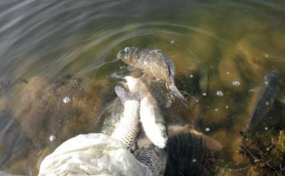

唐佛印禅师贪他一脔脔还他，古今留言终不伪。
戒杀
吃肉何如咬菜根，且图身口戒香薰。
莫言死后无因果，八两须还他半斤。
释愿云千百年来碗里羹，怨深似海恨难平。
后知世上刀兵劫，但听屠门夜半声。
清寿光禅师卫生集（见莲修必读）放生赎命事虽庸，无限阴功在此中。
一岁积成千种福，十年培养万重功。
已赴网罗遭困厄，将投汤火近惊冲，
临刑遇赦恩无量，彼寿隆兮尔寿隆。
明憨山大师人既爱其寿，生物爱其命，
放生合天心，放生顺佛令。
放生免三灾，放生离九横，
放生
放生子孙昌，放生家门庆，
放生无忧恼，放生少疾病。
放生解冤结，放生罪垢净，
放生观音慈，放生普贤行。
放生与
放生又念佛，万修万人证。
真歇禅师人之生日到来，应当持斋戒杀，
或是买命放生，或是诵经念佛。
修桥砌路煮茶，随意奉行善事，
报答生身父母，乳哺三年大德。
弘一大师人在牢狱，终日愁欷。鸟在樊笼，终日悲啼。
聆止哀音，凄入心脾。何如放舍，任彼高飞？
是亦众生，与我体同，应起悲心，怜彼昏蒙。
普劝世人，放生戒杀，不食其肉，乃谓爱物。
回道人汝欲延生听我语，凡事惺惺须求己。
如欲延生须放生，此是循环真道理。
他若死时你救他，你若死时天救你。
延生生子无别方，戒杀和生而已矣。
疾病之由，多从杀生中来，故偏重放生也。
戒杀之众，善神守护，灾横消除，寿算绵长，子孙贤孝，吉祥种种，难可具陈。若更随力放生，加持念佛，不但增崇福德，必当随愿往生，永脱轮回，入不退地。
放生非独
诸放生者，或增福寿，或延寿算，或免急难，或起沉痾，或生天堂，或证
普劝世人随所见生命发慈悲心，是捐舍世财，作斯方便。
若无财者，只发慈悲心，亦是福德，或劝他人放生，或见人放生，赞叹
放生不杀，与物无冤，非惟安乐今生，以此善根，当来之世，长寿永福，乃至成佛，万类有情，倾心归附。
心大德深，其事何验，盖利他者
今更立简易一法，佐使并行，不拘时日，见即买放。于甘月下书某日放生若干，巨生以个数计，细生以觔数计，岁终总算，存以自考。
（巨生如鸦雀龟鳖及大鱼等，细生如虾螺蛙蛤及小鱼等，积功累德，当知果报不可思议。）
上帝好生，下民伤生。舍财救生，图财捕生。
徭二念生，故有众生。生无所生，亦无能生。
无生不生，是名放生。
人既重其生。物亦爱其命。放生合天心。放生顺佛令。
放生怨结解。放生罪垢净。放生免三灾。放生离九横。
放生寿命长。放生官禄盛。放生无忧恼。放生少疾病。
放生嗣胤昌。放生家门庆。放生观音慈。放生普贤行。
放生悟无生。放生
我肉众生肉，形殊性不殊。元同一性命，只是别开躯。
苦痛教他死，将来作已须。莫教阎老断，自想意何如？
（黄山谷非常欣赏这首戒肉诗）
唐白乐天谁道群生性命微，哺雏觅食故飞飞。
劝君莫打三春鸟，子在巢中望母归。
世间水陆与
试今设身游釜甑，方知弱骨受惊冲。
香饵见来须闭口，大江归去好藏身。
盘涡峻激多倾险，莫学长鲸拟害人。
唐杜甫干戈兵革斗未止，凤凰麒麟安在哉。
吾徒胡为纵此乐，暴殄天物圣所哀。
唐杜牧已落双雕血尚新，鸣鞭走马又翻新。
劝君莫射南来雁，恐有家书寄远人。
唐陆甫里万峰回绕一峰深，到此常修苦行心。
自扫雪中归鹿迹，天明恐有猎人寻。
宋苏东坡秋来霜露满东园，芦服生儿芥有孙，
我与何曾同一饱，不知何苦食鸡豚？
钩帘归乳燕，穴牖出痴蝇。
爱鼠常留饭，怜蛾不点灯。
宋陆游血肉淋漓味足珍，一般苦痛怨难伸，
设身处地扪心想，谁肯将刀割自身？
惜身谁肯轻伤发，止杀先从莫拍蚊。
老负明时无补报，惟将忠敬事心君。
晨兴略整案头书，日入庭花始扫除。
未免叮咛惟一事，临池莫钓放生鱼。
元赵孟頫同生今世亦前缘，同尽沧桑一梦间。
往事不堪回首论，放生池畔忆前愆。
明陶望龄戒杀物我从来本一真，幻形分处不分神。
如何共嚼娘生肉，大地哀号惨煞人。
明方孝儒莫驱屋上鸟，鸟有反哺诚。莫烹池上雁，雁行如弟兄。
流观飞来伦，转见天地情。人生处骨肉，胡不心自平。
田家一聚散，草木为枯荣。我愿三春日，垂光照紫荆。
同根而并蒂，蔼蔼共生成。
蓉湖愚者万物伤亡总痛情，虽然虫蚁亦贪生。
一般性命天生就，吩咐儿童莫看轻。
代牛乞命诗耕烟犁雨几经年，领破皮穿未敢眠。
老命自知无足惜，前功还望主人怜。
近代慧道人戒杀醒世歌世人生儿如掌珍，心心常恐儿难育。
不幸少时疾病亡，声声哭出亲儿肉。
蕅益大师 杀生即杀自心未来诸佛，放生即放自心未来诸佛，若放自心未来诸佛，即真念佛三昧，修此念佛三昧，是恒转
欲即人心证佛心，转劫浊成净土，术莫于放生，放生一法，唯广与久，一杯水不救车薪火，唯设人各一杯焉，一杯不已再一杯已，杯水多，车火未有不灭者，今杀运纷纷，并同分恶业招感，非慈悲三昧水，熟能熄之。
戒杀放生者，来世得生于四王天，享无极之福，若兼修净土者，直可往生于西方极乐国土，其功德实无涯矣。
凡有欲家门清泰，身心康宁，天下太平，人民安乐者，请皆于戒杀放生，吃素念佛中求之，则求无不得矣。
佛教东来，阐明
余向提倡戒杀放生，因果
人惟欲眷属团聚，寿命延长，身心安乐，诸缘如意，正应发大悲心，行放生业，使天地鬼神，悉皆愍我爱物之诚，则向之所欲，当可即得。
我今幸承宿世福善，生于人道，固宜解怨释结，戒杀放生，令彼一切有生命者，各得其所。又为念佛回向净土，令得度脱。
凡大圣大贤，无不以戒杀放生，为挽杀劫以培福果，息刀兵而乐天年之基址。
是知戒杀放生，乃拔本塞源之济世良谟也。
须知放生一事，实为发起同人，普护物命之最胜善心。
放生一事，原为启发现未人之善心，以期戒杀茹素，普令含识各得其所，各尽天年。近之则息杀因，远之则灭杀果，小之则全吾心之纯仁，大之则弭世界之杀劫。
天地之大德曰生，人民之大本曰善，生则植物动物并育，善则仁民爱物
常行放生，常行杀生，天地鬼神常为鉴临，必当降以祸福，且勿忽其弱而欺之。
圣君贤相，哲士鸿儒，多皆仰遵佛训，俯培己仁，或茹素而断荤，或戒杀而放生，其嘉言懿行，载诸史册，亦企后人同修慈心，愍彼物类。
弘一大师先问诸君：一欲延寿否？二欲愈病否？三欲免难否？四欲得子否？倘愿者，今有一最简便易行之法奉告，即是放生也。
惟愿诸君自今以后，力行放生之事，痛改杀生之事。
我们要勇猛精进，要内外加修。内修，即是单单的参一句念佛是谁的话头，或念一句阿弥陀佛，不起念嗔痴恚种种其他念头，使真
近来世界人民遭难，杀劫之重，皆是果报所遭；每每劝世人要戒杀放生，吃斋念佛者，也就是要大家免遭因果轮回之 报；诸位须当信奉，种植善因，成就佛果。
谛闲大师不杀为诸戒之首，而放生为众善之先也。
历朝以来，缁素通人，慈善大家，以放生为务者，典籍所载，未易仆罄也。
古圣先贤，莫不以仁慈济物，博爱利生，是知凡为人者，要当以仁存心。
夫干曰大生，坤曰广生，生物不息，天地之大德，人秉天地之气以生，当以天地好生之心为心。
圆瑛大师至论护生一事，佛儒二教，若合符节。我佛以大慈大悲而为救世之本，大慈者，与一切众生之乐，大悲者，拔一切众生之苦。
吾人当
儒教
希望社会诸君，勉力行之，即遇寿辰、结婚、生子，是自己求生，庆生吉祥之事，均宜戒杀放生茹素，以善因而求善果也。
妙善大师（金山活佛）最好的消业方法，莫过于放生，世界上最大的恶业莫过于杀生害命，反过来说，世界上最大的善业是莫过于戒杀放生，所以放生是最大的功德。你能依我的话，赶快量力买生物放生，就能增福延寿的。
智者大师 智者大师相传为
永明大师相传为阿弥陀佛慈悲示现，五代时大师为余杭县库吏，常常因救急以库钱买鱼虾等物命放生，后因监守自盗罪被判死刑，行刑前大师态度
寒山大师相传为
梁武帝问志公禅师：「
答曰：「放生功德，不可限量。经云：蠢动含灵，皆有
放生合天心 放生顺佛令 放生观音慈 放生普贤行
放生无忧恼 放生少病疾 放生嗣胤昌 放生官禄盛
放生免三灾 放生家门庆 杀生与放生 果报明如镜
遵氏大师（慈云忏主） 遵氏大师晚年主持杭州昭庆、